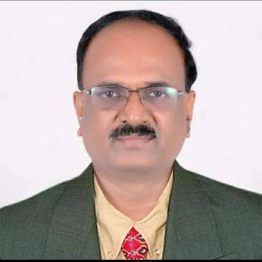

Current
Director & Member Secretary
Institute for Social and Economic Change (ISEC), Bengaluru

Prof. M. Gurulingaiah is the Director and Member Secretary of the Board of Governors at the Institute for Social and Economic Change (ISEC), Bengaluru—a premier interdisciplinary social science research institution founded by Prof. V. K. R. V. Rao. With over 32 years of academic distinction in teaching, research, and public policy leadership, Prof. Gurulingaiah is one of South India's foremost authorities in sociology, social anthropology, and ethnographic studies.
Prior to his appointment as Director of ISEC, he served as Senior Professor and Chairman of the Department of Sociology, Dean of Social Sciences, and Director of the School of Social Sciences at Kuvempu University, as well as a full-time Member of the Karnataka State Backward Classes Commission (Government of Karnataka, 2014–2018). His pioneering research centers on the socio-cultural dynamics of nomadic and semi-nomadic tribes, tribal mobility, caste systems, social exclusion, and affirmative policy intervention for historically marginalized communities.
Interdisciplinary sociological inquiry connecting ethnographic fieldwork, social stratification, and evidence-based public policy.
As Director of ISEC Bengaluru—the collaborative institution for LLCSS 2026—Prof. M. Gurulingaiah brings profound institutional vision and sociological insight, addressing the conference on sustainable development, ethnographic inclusivity, and interdisciplinary dialogues bridging social sciences and the humanities.
Author of 10 books, editor of 12 academic volumes, and contributor of over 60 research papers and major commission reports.
Office of the Director, Institute for Social and Economic Change (ISEC), Dr. V.K.R.V. Rao Road, Nagarabhavi, Bengaluru – 560 072, Karnataka, India